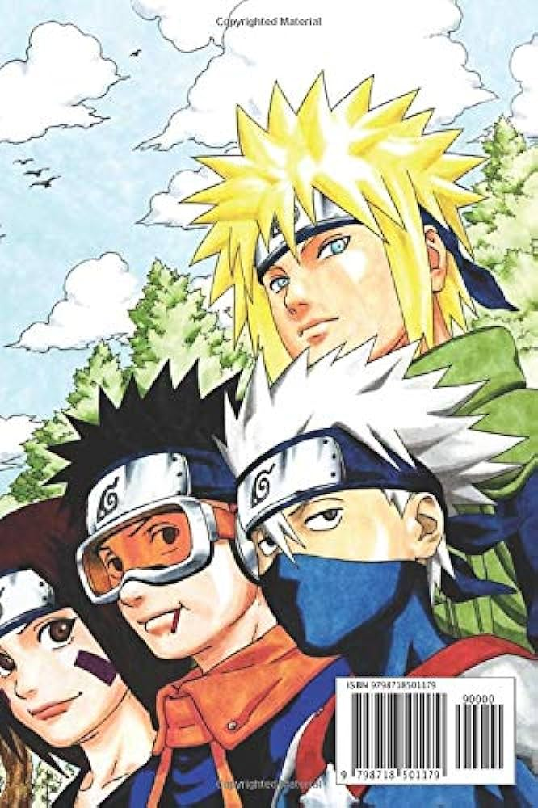

Selamat datang di halaman daftar buku. Kami dengan senang hati menyajikan kepada Anda koleksi buku yang beragam dan menarik. Dari fiksi hingga non-fiksi, dari sastra klasik hingga buku-buku terbaru, kami berkomitmen untuk memenuhi kebutuhan dan minat pembaca dari berbagai latar belakang dan usia.
Di sini, Anda akan menemukan kisah-kisah yang memikat, informasi yang mendidik, dan petualangan yang tak terlupakan. Kami terus memperbarui koleksi kami untuk memastikan bahwa Anda selalu memiliki akses ke buku-buku terbaru dan paling relevan. Apakah Anda mencari inspirasi, pengetahuan baru, atau sekadar ingin bersantai dengan membaca, kami siap memberikan pengalaman membaca yang memuaskan dan bermanfaat bagi Anda.
Ayo jelajahi koleksi kami dan temukan buku yang sesuai dengan minat dan keinginan Anda. Jadikan membaca sebagai bagian penting dari gaya hidup Anda dan mari bersama-sama menjelajahi dunia melalui halaman-halaman buku.
| NO | Cover | Judul | Penulis | Status |
|---|---|---|---|---|
| 1 | |
Dr. Stone | Riichiro Inagaki | Tersedia |
| 2 |  | Naruto | Masashi kisimoto | Di pinjam |
| 3 | 86 Eighty Six | Asato Asato | Tersedia |